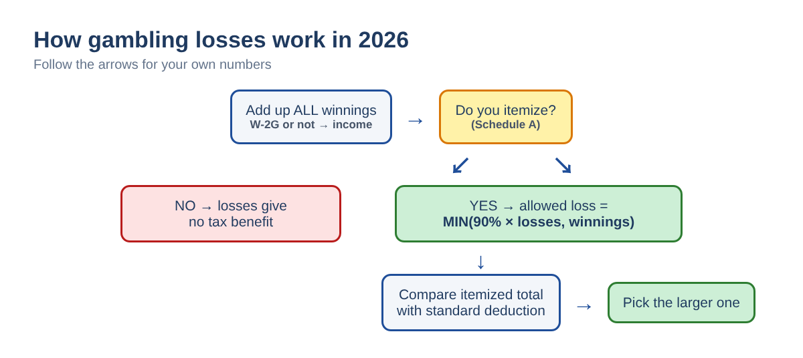
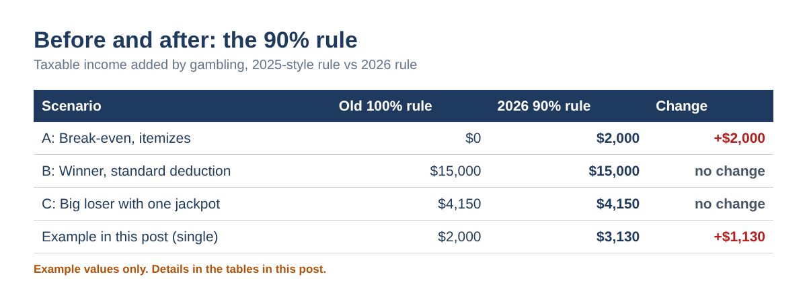
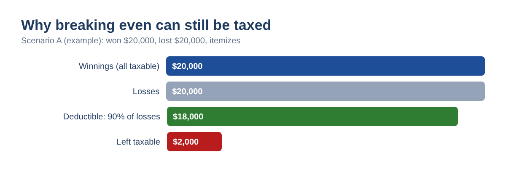
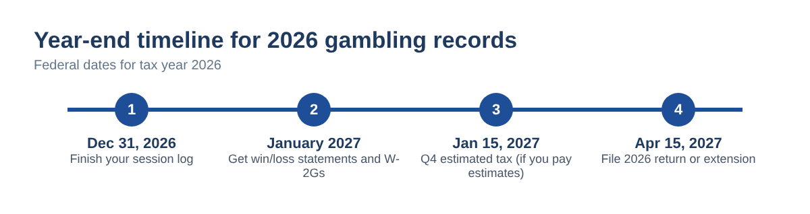

For years, the rule for casual gamblers was simple: if you itemized, you could deduct your gambling losses up to the amount of your winnings. A break-even year meant zero tax from gambling. Starting with tax year 2026, that is no longer true. The federal tax law passed in 2025 limits the deduction to 90% of your losses — and it still can never be more than your winnings.
That small change surprises people who visit casinos, play poker, use sports-betting apps or buy a lot of lottery tickets. You can come out ahead by a few hundred dollars and still be taxed on several thousand. This post shows exactly how the 2026 rule works, with formulas you can type into Excel or Google Sheets, three worked examples, and a year-end checklist so your records are ready before you file.
Who this is for: US taxpayers who gamble for fun (not as a business) and want to know what their 2026 winnings and losses will do to their taxes — before April 2027.

Use one row per visit or betting day (a "session"). Write down what you brought in and what you left with. A day that ends up is a win; a day that ends down is a loss. In a sheet with Cash in in column D and Cash out in column E, use:
Keep proof for each row: casino win/loss statements, betting-app annual statements, tickets and slips, and bank or ATM records. The IRS says you must keep an accurate diary or similar record and be able to show receipts, tickets or statements.
Here is a full example. Type these inputs in cells B1–B4 (example values, not real data):
| Input | Example value |
|---|---|
| Filing status | Single |
| Gambling winnings (B1) | $12,200 |
| Gambling losses (B2) | $11,300 |
| Other itemized deductions (B3) | $15,000 |
| 2026 standard deduction (B4) | $16,100 |
Then add these formulas in B5–B11:
| Cell / step | Formula | Result |
|---|---|---|
| B5: 90% of losses | =0.9*B2 | $10,170 |
| B6: Allowed loss (capped at winnings) | =MIN(0.9*B2,B1) | $10,170 |
| B7: Deduction with gambling | =MAX(B4,B3+B6) | $25,170 |
| B8: Deduction without gambling | =MAX(B4,B3) | $16,100 |
| B9: Extra deduction from losses | =B7-B8 | $9,070 |
| B10: Taxable income added by gambling | =B1-B9 | $3,130 |
| B11: Same under the old 100% rule | =B1-(MAX(B4,B3+MIN(B2,B1))-B8) | $2,000 |
The key idea is in B7–B9: losses only help by the amount your itemized total rises above what you would have deducted anyway. In this example the person really came out $900 ahead, but gambling adds $3,130 to taxable income. Under the old 100% rule it would have been $2,000 — still more than $900, because part of the losses only fills the gap up to the standard deduction.
2026 standard deduction amounts: $16,100 for single or married filing separately, $32,200 for married filing jointly, and $24,150 for head of household (IRS Publication 505 for 2026). Add any extra amount for age 65 or older or blindness yourself.
The same formulas give very different results depending on your other deductions. All values below are examples.
| A: Break-even regular | B: Winner, standard deduction | C: Net loser with a jackpot | |
|---|---|---|---|
| Filing status | Single | Married filing jointly | Head of household |
| Winnings | $20,000 | $15,000 | $8,000 |
| Losses | $20,000 | $6,000 | $25,000 |
| Other itemized deductions | $18,000 | $12,000 | $20,000 |
| Standard deduction (2026) | $16,100 | $32,200 | $24,150 |
| Allowed loss (90%, capped) | $18,000 | $5,400 | $8,000 |
| Better choice | Itemize | Standard | Itemize |
| Taxable income added (2026) | $2,000 | $15,000 | $4,150 |
| Under the old 100% rule | $0 | $15,000 | $4,150 |
| Real-money result | $0 | +$9,000 | −$17,000 |


A Form W-2G shows only the winnings a payer had to report. For payments made in 2026, the IRS minimum reporting threshold for the W-2G is $2,000, and it will be adjusted for inflation in later years. Some wagers also have 24% federal withholding when winnings minus the wager are more than $5,000 (and at least 300 times the wager for sports, races and similar bets); slots, bingo and keno are not subject to that regular withholding.
Simple check: the total winnings in your log should not be lower than the total of Box 1 on your W-2Gs. In a sheet: =IF(SUM(W2G_Box1)>Log_Winnings,"Check","OK"). If it says "Check," you probably left out a session.

If gambling will add a lot of income and you make estimated payments, the fourth-quarter 2026 estimated tax payment is due January 15, 2027. The 2026 return is due April 15, 2027 (or file an extension). States have their own rules for gambling losses; check your state tax agency.
I broke even in 2026. Will I owe tax on gambling? Possibly. If you itemize, 10% of your losses cannot be deducted. If you take the standard deduction, all of your winnings are taxable.
Can I deduct more losses than winnings? No. The deduction can never be more than your gambling winnings, and any extra loss does not carry over to another year for casual gamblers.
Do I send my gambling log with my return? Usually not. Keep it with your tax records in case the IRS asks.
Does this apply to professional gamblers or nonresident visitors? Different rules apply to both. This post covers US residents who gamble as a hobby.
This article is educational information only and is not tax, legal or financial advice. Examples are made up. Tax rules can change and your situation may differ; talk to a qualified tax professional before you file.
You can download the ready-made Gambling Winnings & Losses Log 2026 for free in the Free kit download box below (Excel + PDF guide, no sign-up).